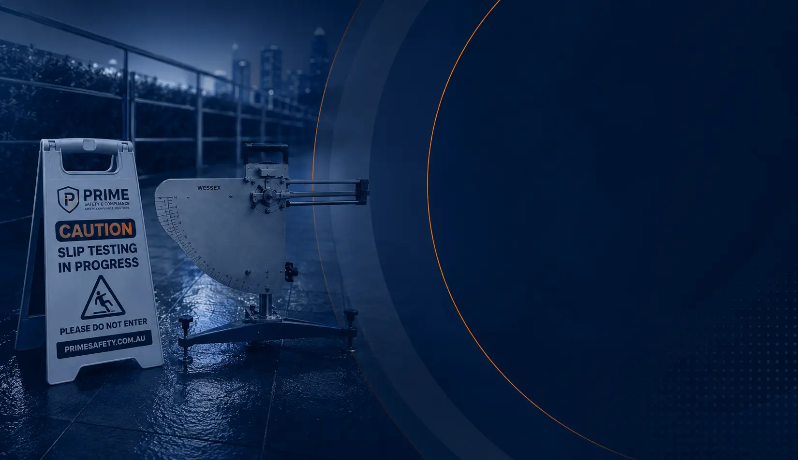

Director & Safety Consultant
Sukhjinder Baath
18+ years of commercial facilities and safety experience. Conducts slip resistance and Test & Tag assessments, with a focus on practical field conditions and clear evidence.
Acknowledgement of CountryPrime Safety & Compliance Services Pty Ltd acknowledges the Traditional Custodians of the lands on which we live and work. We pay our respects to Aboriginal and Torres Strait Islander Elders past, present and emerging, and recognise their continuing connection to land, waters and community.
Meet the team responsible for field testing, quality assurance and professional reporting — backed by a growing WA client and project track record.

Prime Safety is a 100% Western Australia owned and operated testing business focused on independent field assessment, quality assurance and practical compliance reporting.
18+ years of commercial facilities and safety experience. Conducts slip resistance and Test & Tag assessments, with a focus on practical field conditions and clear evidence.
Reviews reports for accuracy, consistency and document quality, supporting reliable client deliverables.
Prime Safety supports property, facilities and commercial teams that need independent testing evidence for maintenance, risk assessment and due diligence.
Leading property and facilities management firms and commercial clients across Western Australia.
A growing portfolio of slip resistance assessments across commercial, retail, health and property-managed sites.
Objective testing, professional compliance reports and practical service from a 100% Western Australia owned and operated team.
Prime Safety's role is to measure, document and communicate the agreed testing results — not to sell flooring products or push a remediation outcome.
Tell us what you manage, where the site is located and what evidence your team needs.